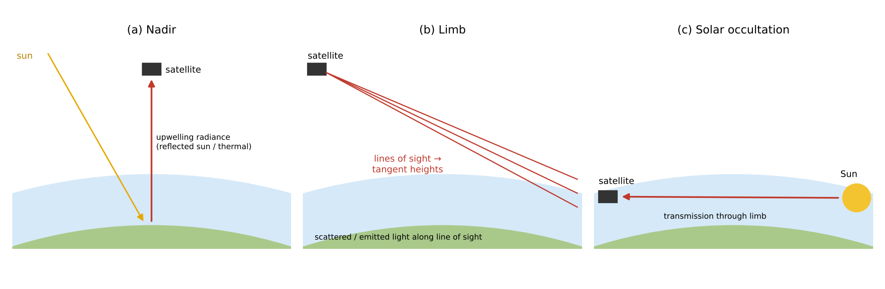
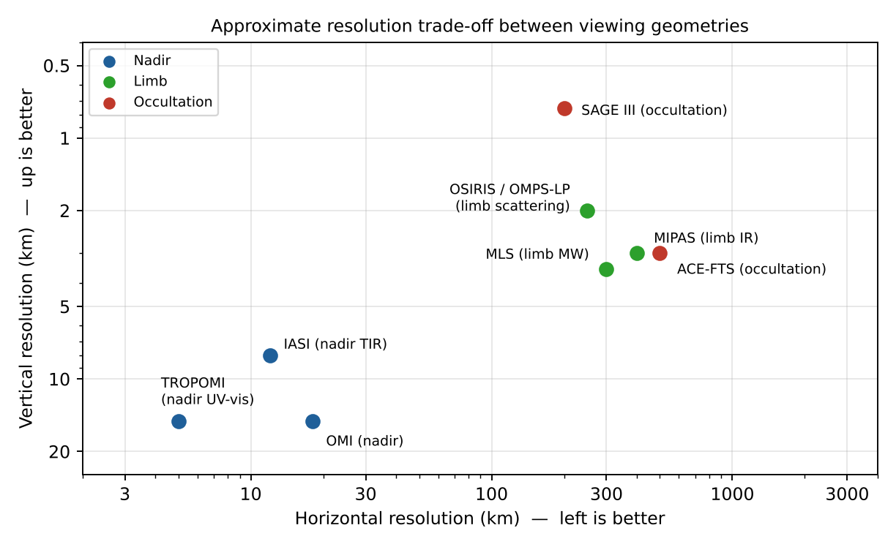

Pointing geometries of spaceborne sensors
Study guide chapter 4
Three viewing geometries

Figure 13 (study guide): nadir, limb and occultation.
- Nadir: looking down — TROPOMI, OMI, GOME-2, IASI, OCO-2
- Limb: looking tangentially — OSIRIS, MIPAS, MLS
- Occultation: looking at the Sun through the edge — SAGE, ACE-FTS
Nadir: pros and cons
Advantages
• Horizontal resolution of a few km (TROPOMI 5.5×3.5 km²)
• Daily global coverage
• Sees the troposphere/boundary layer
• Day (UV-vis), day and night (TIR)
• Daily global coverage
• Sees the troposphere/boundary layer
• Day (UV-vis), day and night (TIR)
Disadvantages
• Poor vertical resolution (a column or 1–6 pieces of information)
• Sensitive to albedo, emissivity, clouds, aerosols
• Short path → weak signal per layer
• Sensitive to albedo, emissivity, clouds, aerosols
• Short path → weak signal per layer
Limb: pros and cons
Advantages
• Vertical resolution 1–3 km
• Long path → very sensitive
• No surface background
• Emission limb: day and night
• Long path → very sensitive
• No surface background
• Emission limb: day and night
Disadvantages
• Horizontal resolution ~200–400 km
• No view below ~5–10 km
• Complex RT (sphericity, multiple scattering)
• Pointing must be known precisely
• No view below ~5–10 km
• Complex RT (sphericity, multiple scattering)
• Pointing must be known precisely
Occultation: pros and cons
Advantages
• Self-calibrating: I/I0 cancels instrument drift
• Very accurate, good for long-term trends
• Strong signal, ~1 km vertical, high S/N
• Simple RT (Beer–Lambert)
• Very accurate, good for long-term trends
• Strong signal, ~1 km vertical, high S/N
• Simple RT (Beer–Lambert)
Disadvantages
• Very poor coverage: ~30 profiles/day (2 per orbit)
• Latitude bands depend on the orbit
• Poor horizontal resolution along the path
• Only upper troposphere and stratosphere
• Latitude bands depend on the orbit
• Poor horizontal resolution along the path
• Only upper troposphere and stratosphere
Trade-off: horizontal vs vertical resolution

Figure 14 (study guide): approximate horizontal and vertical resolution of typical instruments for each geometry.
Nadir wins on horizontal resolution; limb and occultation win on vertical resolution.
Orbits: LEO and geostationary
Sun-synchronous LEO
Global coverage once per day at a fixed local time.
TROPOMI, OMI, GOME-2
TROPOMI, OMI, GOME-2
Geostationary (GEO)
Hourly view of one continent → diurnal cycle of pollution.
GEMS, TEMPO, Sentinel-4
GEMS, TEMPO, Sentinel-4
Nadir + limb
Tropospheric column = total (nadir) − stratospheric (limb).
SCIAMACHY, OMPS
SCIAMACHY, OMPS
Choosing a geometry by goal
| Goal | Geometry | Reason |
|---|---|---|
| Most accurate stratospheric ozone trend | Solar occultation | Self-calibrating, high S/N, ~1 km |
| NO₂ emissions of individual cities | Nadir | Km-scale horizontal resolution, boundary-layer sensitivity |
| Detailed stratospheric chemistry profiles | Limb | Vertical resolution 1–3 km, many species |
| Diurnal cycle of pollution | Geostationary nadir | Hourly observation |
Worked example: why limb sounding has a long path and coarse horizontal resolution
- Path through a layer of thickness H at the tangent point: L ≈ √(8·R·H). With R = 6371 km and H = 1 km → L ≈ 226 km.
- Nadir: the same 1 km layer is crossed over ≈ 1 km (× air mass factor) → the limb path is ≈ 100–200 times longer (226× in this estimate): much stronger signal, but averaged over ≈ 200–300 km horizontally.
- Coverage: solar occultation gives ≈ 15 orbits × 2 = ~30 profiles/day; TROPOMI (2600 km swath, 5.5 × 3.5 km² pixels) gives millions of pixels/day.
Quick Q&A
Why can limb sounders not see the boundary layer?
Clouds and the very long, opaque path in the lower troposphere block the line of sight.
Why is occultation self-calibrating?
The same instrument measures I₀ outside the atmosphere a few minutes earlier; only the ratio I/I₀ is used.
Which geometry for CO₂ point sources?
Nadir with small pixels (OCO-2, CO2M): sources need horizontal detail.
Why does a geostationary instrument need larger optics?
It is ≈ 36 000 km away instead of ≈ 800 km: ≈ 45 times further.
Exam checklist — Chapter 4
1
Three geometries: nadir, limb (scattering/emission), occultation (Sun, stars, Moon, GNSS)
2
Trade-off: horizontal resolution and tropospheric sensitivity (nadir) ↔ vertical resolution and accuracy (limb/occultation)
3
Occultation = self-calibrating, most accurate, worst coverage
4
Draw the three geometries with the Earth, atmosphere shell and lines of sight
Key points
- Nadir: good horizontal, poor vertical resolution
- Limb: good vertical, poor horizontal, cannot see low
- Occultation: self-calibrating and accurate, but few profiles
- Geostationary: hourly diurnal cycle